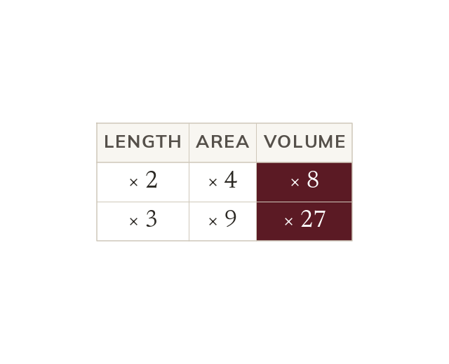

Volume uses the factor three times
Volume has three lengths, so it is multiplied by
Surface area is still multiplied by
Volume has three length dimensions, so the volume is multiplied by
Surface area is still an area, so it is multiplied by
Surface area is still an area, so it is multiplied by